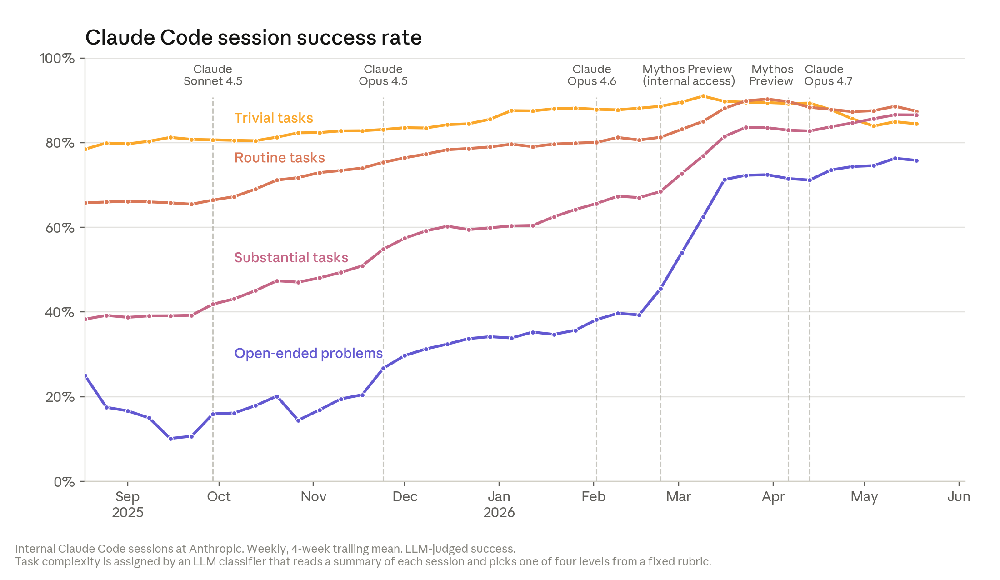

Building the factory that builds software
A lot of organisations are quietly transitioning from using AI-assisted coding to building the factory that produces the software. Stripe merges over 1,300 pull requests a week that contain no human-written code. Spotify's background agents merge 650+ PRs a month into production. Around half of Ramp's merged PRs start from their in-house agent, and a three-person team at OpenAI shipped a million-line product by driving agents instead of typing. So how is the factory set up in these organisations?
It is not a multi-agent system
When people picture the factory, they picture fleets of specialised agents — a planner, a few doers, a reviewer, a tester — passing work to each other like stations on an assembly line. In fact the opposite is happening, for the precise reason that Cognition, the company behind Devin, articulated in Don't Build Multi-Agents. In short, every action an agent takes carries implicit decisions, and parallel agents that cannot see each other's full traces make conflicting decisions that compound into incoherent work.
Instead the factory consists of many independent but powerful agents. Stripe's minions are one agent loop wrapped in "blueprints" — state machines that interleave deterministic steps (lint, push, run the right slice of a 3M-test battery) with agentic ones (implement, fix CI). Spotify's Honk is one deliberately minimal Claude Code agent whose git cannot even push. The only genuine second agent anyone runs in production is OpenAI's Auto-review, and it is a safety reviewer gating sandbox escalations, not a quality reviewer. The factory is one agent and a lot of plumbing.
The agent gets the environment you would give an engineer
If the factory is one agent, the first practical question is where it works. The convergent answer: a sandboxed environment that looks remarkably like what you would hand a new engineer on day one — the repo, a shell, the tests, and access to the tools your engineers get. Stripe spins up pre-warmed devboxes in about ten seconds, identical to the ones human engineers use, cut off from production and the internet. Ramp restores Modal sandboxes from repo snapshots rebuilt every thirty minutes, so the agent starts near-instantly on code that is at most half an hour stale, with the same telemetry — Sentry, Datadog, feature flags — its engineers check.
This environment is not a new idea. Google's engineers have worked in the cloud for over a decade. By 2023 around 80% of development on its main codebase happened in Cider, its web IDE, on top of a file system that streams the monorepo on demand. GitHub Codespaces made the dev environment a URL back in 2020, and plenty of startups run on that setup today. As it turns out, this way of working is an even better fit for agents than engineers, since a repo, a shell and a test runner is all an agent needs, it spins up a fresh one per task, and it does not keep your hours.
A hybrid, not a handover
The trending setup, on the other hand, is not "agents slowly replacing developers" — it is a hybrid. A background fleet independently completes the delegable work, while every developer keeps an agentic coding tool like Claude Code or Cursor in hand for the rest. This has two properties I like. First, you are permanently testing the frontier: when an autonomous run fails, the task degrades gracefully into an assisted one rather than a rewrite, and when the models improve, tasks graduate the other way. Second, it is assistive to the developer's flow rather than disruptive — the developer and the agent work the same way, in the same environment, against the same verification, so nothing about the codebase has to be split into "human code" and "agent code".
Which tasks go to the factory
Not everything belongs on the conveyor belt yet, so it's natural to ask which tasks you send towards the autonomous agents versus your developer team. The tasks organisations actually delegate are well-scoped and mechanically verifiable: migrations, dependency upgrades, bug fixes, cleanup. Spotify's Honk is openly a migration factory — its dataset migration shipped 240 automated PRs that the company estimates saved ten engineering weeks. Stripe's minion PRs skew towards config changes, upgrades and small refactors. OpenAI runs recurring cleanup agents whose refactoring PRs are small enough to review in under a minute.
These task classes serve as an excellent testing ground as you keep exploring a boundary that keeps moving. Anthropic's When AI Builds Itself charts exactly this: success on well-defined tasks saturated first, while success on open-ended coding tasks climbed to 76% by May 2026 — which is how 80% of the code merged at Anthropic ends up written by Claude.

The practical rule: delegate where a pass/fail check exists, keep judgment work hybrid, and re-draw the line every quarter, because the open-ended curve is the one moving.
Keeping the agent on task
The main steering mechanism remains unglamorous: a CLAUDE.md or AGENTS.md file plus skills. It is a compact, inspectable way to inject specific instructions, org policies and practices, and a working memory into every run. The pattern that works is now well documented — OpenAI tried the one big AGENTS.md and reports it failed in predictable ways; what survives is a ~100-line table of contents pointing into real docs, kept fresh mechanically. GitHub's analysis of 2,500+ repos lands on the same size, and finds "never commit secrets" the most common instruction in the wild.
All of this is scaffolding the labs are actively trying to absorb into the models — better memory, better context management, agents choosing what they need. Until they do, these files and loops are the interface to your factory.
So what do you do?
If you are an engineering leader, the factory reframes your questions. Not "should we use AI coding" — that ship has sailed — but three concrete ones. What environment do agents get? Give them what you would give an engineer, sandboxed and scoped. How do you keep them on task? An AGENTS.md worth maintaining, a verification loop the agent cannot talk its way around, and hard caps on iteration. What goes to the agent versus the human? Start with migrations, upgrades and bug fixes, run everything else hybrid, and move the line as the frontier moves.